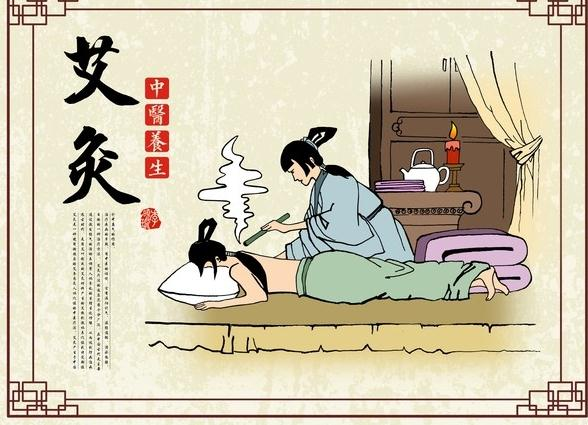
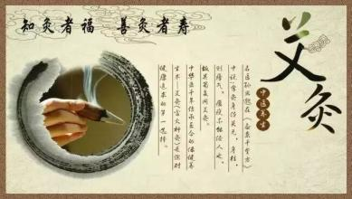

艾灸产生于中国远古时代，因为它的作用机理和针疗有相近之处，并且与针疗有相辅相成的治疗作用，通常针、灸并用，故称为针灸。针灸治病在国内外有着深远的影响，但现代人说针灸，多数时候仅指针疗，已经很少包含艾灸的内容了。
艾灸-简介
通常认为针和灸是同一种疗法，其实并不是这样。虽然它们都是建立在人体经络穴位的认识之上，但针疗产生的只是物理作用，而艾灸是药物和物理的复合作用。而且两者治疗的范围也不一样，所谓“针所不为，灸之所宜”，指的就是其中的区别。
说艾灸的一种神奇的疗法，因为它的确有很多不同凡响之处。首先，艾灸的疗效就十分神奇。艾灸疗法的适应范围十分广泛，在中国古代是主要治疗疾病的手段。用中医的话说，它有温阳补气、温经通络、消瘀散结、补中益气的作用。可以广泛用于内科、外科、妇科、儿科、五官科疾病，犹其对乳腺炎、前列腺炎、肩周炎、盆腔炎、颈椎病、糖尿病等有特效。
其次，艾灸具有奇特养生保健的作用。用灸法预防疾病，延年益寿，在我国已有数千年的历史。《黄帝内经》“大风汗出，灸意喜穴”，说的就是一种保健灸法。《庄子》记载圣人孔子“无病而自灸”，也是指用艾灸养生保健。日本人须藤作等做过的灸法抗癌研究，还表明艾灸可以使皮肤组织中潜在的抗癌作用得到活化，起到治癌抗癌的作用。
艾灸-历史发展
灸法的起源- 灸法的运用当起源千人类掌握用火之后，时间亦在石器时代。
一、“灸”字考
“灸”字，在现存文献中，以《庄子》最早提及。如《庄子·盗跖篇》载孔子劝说柳下跖，碰了个大钉子，事后对柳下季说，“丘所谓无病而自灸也”。但“灸”的本字是“久”字。如1975年于湖北云梦睡虎地出土的奉墓竹简(法律文书)《封诊式·贼死》中载，“男子丁壮，析(皙)色，长七尺一寸，发长二尺，其腹有久故瘢二所”，此“久”即“灸”之本义，训为灸灼。汉墓出土的《五十二病方》、《阴阳十一脉灸经》(以下简称《阴阳》)，《足臂十一脉灸经》(以下简称《足臂》)、《脉法》、《武威汉摹医简》中均作“久”字。“久”以后演变为“灸”字。汉代许慎《说文解字》曰：“灸，灼也，从火”。
从甲骨文字形的研究考证，现代胡厚宣认为，“我释床，亦即庥字……字当象一人卧病床上，从木象以火艾灸病之形”。灸法已在殷代出现。康殷认为在商周初期灸法、熨法已普遍流行。
二、灸法的运用当起源千人类掌握用火之后
在170万年前，云南元谋人就已开始用火。陕西蓝田人在100万年前就有用火的痕迹，北京周口店人在50万年前已经掌握了用火的方法，并已能保存火种。
《庄子·外物》载：“木与木相摩则燃”，《绎史·大古第一》载：“燧人钻木取火，炮生为熟，教人熟食”。人们在百万年的加工石器的过程中随时都会出现摩擦生火的事例，从钻木、刮木等生产实践所引起的燃烧中，逐渐获得了有益的启示，终于发明了人工取火的方法。此种简便的方法，直到解放前我国有些少数民族地区仍在使用着，如佤族用木棒上卜交互摩擦取火，苦聪人锯竹取火，黎族钻木取火等。
火的发现和使用跟人类结下了不解之缘!火的掌握既可使人类躲避猛兽的侵袭，可以熟食，又可抵御严寒酷冬的恶劣气候，还可将树木等用火燃着后灸于患处，祛除寒邪，解除痛苦。
三、灸的材料的发展
在实践过程中，对灸火的材料亦有所选择，至《黄帝虾蟆经》已载有松、柏、竹、橘、榆、帜、桑、枣等八木不宜作为灸火之说，因为其对人体有所伤害，所以逐渐被淘汰，但桑树灸在后世亦有用之者。槐木火灸，病疮易瘥，但艾叶熏灸则疗效最著，故以后才逐渐多用艾叶来代替其它灸疗。
灸法的运用当起源于人类掌握用火之后，时间亦在石器时代。
四、灸的适应症
灸疗，起初主要是用于治疗寒症的。
如《素问·异法方宜论》曰：“北方者……风寒冰冽，其民乐野处而乳食，藏寒生满病，其治宜灸焫”。唐代王冰注：“火艾烧的，谓之灸焫”，用这种烧灼疗法治疗“藏寒生满病”是颇有疗效的，以后逐渐发展为治疗全身不同性质的多种疾病。
《左传》成公十年(公元前581年)载，晋景公病，延秦国太医令医缓来诊，医缓说，“疾不可为也。病在盲之上、膏之下，攻之不可，达之不及，药不治焉”。“攻”即是灸法，“达”即是刺法。
五、艾灸疗法起源于——艾灸疗法的下限也不会晚于西周，在春秋战国时代已颇为流行
春秋时代的《诗经·采葛》载：“彼采艾兮”，西汉毛亨和毛茛传释：“艾所以疗疾”。从远古时代实际临床运用早于文字记载的特点来看，艾灸疗法的下限也不会晚于西周。
宋代沈括《梦溪笔谈》卷18载西戎的卜法：“以艾灼羊髀骨，视其兆，谓之死跋焦”。以此印证，我国殷商以前的甲骨卜法，也可以用艾作燃料。
《孟子·离娄篇》载：“今之欲王音，犹七年之病，求三年之艾也”。可见艾灸疗法在春秋战国时代已颇为流行，因此，用艾灸治病的起源也当在西周之前。主要作用
1、 温通经脉、驱散寒邪
因本法采用上等陈艾，融入数位中药、藏药合制而成，火柔而温，渗透力极强，能温经散寒，以火攻邪。
传统中医认为人体正常生命活动，有赖于气血的作用，气血不足、运行不畅就容易衰老生病。那么气血有“遇温则行，遇寒则凝”的两大特点。当今社会大多爱美女性，在着装上喜爱露脐装，在春秋季节容易使风寒之邪入侵丹田，在夏季喜欢吹空调，又喜欢吃冰冻的食物，使大多数女性形成了寒凉体质，出现了畏寒肢冷、手脚冰凉、痛经、脾胃虚弱等亚健康状况。邓红温灸疗法正是利用艾火对经络穴位的温热刺激，使气血运行，以火攻邪。具有祛风寒、化瘀滞、消炎止痛，促进细胞再生，从而达到保健、养生、美容之功效。
2、 行气活血，消瘀散结
对于邓红温灸疗法所用的药艾，具有芳香走窜的特性，燃烧时所散发出的温热与特殊气味，能够快速的开通人体的经络，加速人体的气血循环。
3、 温补益气，回阳固脱
邓红温灸疗法补益强身，能激发人体免疫系统功能，促进新陈代谢，强内通外。邓红温灸疗法具有特殊的纯阳之性，能使人阳气足，精血充沛，固体强身，增强人体消化、循环、排泄、生殖泌尿系统机能的作用。针对肥胖以及肥胖而致的肌肉麻木，四肢不遂，二便不匀，腰腿酸痛，动则气短，体倦乏力如《内经》所讲“正气内存，邪不可干，邪之所凑，其气必虚”。
4、 预防疾病，保健强身
常灸足三里、关元、大椎等穴，能激发人体正气，提高抗病能力，起到保健强身作用。艾灸疗法能健身、防病、治病，在我国已有数千年历史。早在春秋战国时期，人们已经开始广泛使用艾灸法，如《庄子》中有“越人熏之以艾”，《孟子》中也有“七年之病求三年之艾”的记载。历代医学著作中更比比皆是。艾灸能激发、提高机体的免疫功能，增强机体的抗病能力。现介绍几种常用的自我保健艾灸方法，它见效快，操作方便，相对无药物伤害之忧，读者不妨一试。
5、艾灸美容
艾灸的美容与一般的化妆品美容，手术美容是两个不同的概念，一个是本质上的，另一个是表面上的。化妆品可以掩饰你的不足，手术可以改造你的结构，可以满足你暂时的虚荣心，但这些都无法给你真正的健康。因为健康而使你青春常驻，容光焕发，思维敏捷，反应灵敏，那又是另一种不同层次上的美。通过吃药，打针或者锻炼，你或许也可以或多或少地达到你期望的效果。但没有灸疗好，艾灸是驱散疲劳，恢复元气，补充体能，平衡阴阳的最有效的手段。 有很多女人脸上不光滑洁净，这往往是内分泌失调引起的，实际上还是阳能不足，而不是像一般所说的上火。

艾灸-方法
1、直接灸
是将大小适宜的艾炷，直接放在皮肤上施灸。若施灸时需将皮肤烧伤化脓，愈后留有瘢痕者，称为瘢痕灸。若不使皮肤烧伤化脓，不留瘢痕者，称为无瘢痕灸。
(1)瘢痕灸：又名化脓灸：施灸时先将所灸腧穴部位，涂以少量的大蒜汁，以增加粘附和刺激作用，然后将大小适宜的艾炷置于腧穴上，用火点燃艾炷施灸。每壮艾炷必须燃尽，除去灰烬后，方可继续易住再灸，待规定壮数灸完为止。施灸时由于火烧灼皮肤，因此可产生剧痛，此时可用手在施灸腧穴周围轻轻拍打，借以缓解疼痛。在正常情况下，灸后1周左右，施灸部位化脓形成灸疮，5-6周左右，灸疮自行痊愈，结痴脱落后而留下瘢痕。临床上常用于治疗哮喘、肺结核、瘰疬等慢性疾病。
(2)无瘢痕灸：施灸时先在所灸腧穴部位涂以少量的凡士林，以使艾炷便于粘附，然后将大小适宜的艾炷，置于腧穴上点燃施灸，当灸炷燃剩五分之二或四分之一而患者感到微有灼痛时，即可易炷再灸。若用麦粒大的艾炷施灸，当患者感到有灼痛时，医者可用镊子柄将艾炷熄灭，然后继续易位再灸，按规定壮数灸完为止。一般应灸至局部皮肤红晕而不起泡为度。因其皮肤无灼伤，故灸后不化脓，不留瘢痕。一般虚寒性疾患，均可此法。
2.间接灸
是用药物将艾炷与施灸腧穴部位的皮肤隔开，进行施灸的方法。如生姜间隔灸、隔盐灸等。
(1)隔姜灸：是用鲜姜切成直径大约2-3厘米、厚约0.2-0.3厘米的薄片，中间以针刺数孔，然后将姜片置于应灸的腧穴部位或患处，再将艾炷放在姜片上点燃施灸。当艾住燃尽，再易炷施灸。灸完所规定的壮数，以使皮肤红润而不起泡为度。常用于因寒而到的呕吐、腹痛、腹泻及风寒痹痛等。
(2)隔蒜灸：用鲜大蒜头，切成厚0.2-0.3公分的薄片，中间以针刺数孔，然后置于应灸俞腧或患处，然后将艾炷放在蒜片上，点燃施灸。待艾炷燃尽，易炷再灸，直至灸完规定的壮数。此法多用于治疗瘰疬，肺结核及初起的肿疡等症。
(3)隔盐灸：用纯净的食盐填敷于脐部，或于盐上再置一薄姜片，上置大艾炷施灸。多用于治疗伤寒阴证或吐泻并作，中风脱证等。
(4)隔附子饼灸：将附子研成粉末，用酒调和做成直径约3厘米、厚约0.8厘米的附子饼，中间以针刺数孔，放在应灸腧穴或患处，上面再放艾炷施灸，直到灸完所规定壮数为止。多用治疗命门火衰而致的阳痿、早泄或疮疡久溃不敛等症。
3.艾卷灸
(1)艾条灸：是取纯净细软的艾绒24克，平铺在26厘米长、20厘米宽的细草纸上，将其卷成直径约l.5厘米圆柱形的艾卷，要求卷紧，外裹以质地柔软疏松而又坚韧的桑皮纸，用胶水或浆糊封口而成。也有每条艾绒中渗入肉桂、干姜、丁香、独活、细辛、白芷、雄黄各等分的细末6克，则成为药条。施灸的方法分温和灸和雀啄灸。
(2)温和灸：施灸时将艾条的一端点燃，对准应灸的腧穴部位或患处，约距皮肤2-3厘米左右，进行熏烤。图150。熏烤使患者局部有温热感而无灼痛为宜，一般每处灸5-7分钟，至皮肤红晕为度。对于昏厥、局部知觉迟钝的患者，医者可将中、食二指分开，置于施灸部位的两侧，这样可以通过医者手指的感觉来测知患者局部的受热程度，以便随时调节施灸的距离和防止烫伤。
(3)雀啄灸：施灸时，将艾条点燃的一端与施灸部位的皮肤并不固定在一定距离，而是像鸟雀啄食一样，一上一下活动地施灸。另外也可均匀地上、下或向左右方向移动或作反复地施转施灸。
4.温针灸
是针刺与艾灸结合应用的一种方法，适用于既需要留针而又适宜用艾灸的病症。操作时，将针刺入腧穴得气后，并给予适当补泻手法而留针，继将纯净细软的艾绒捏在针尾上，或用艾条一段长约2厘米左右，插在针柄上，点燃施灸。待艾绒或艾条烧完后，除去灰烬，取出针。
5. 温灸器灸
是用金属等材质特制的一种圆筒灸具，故又称温筒灸。其筒底有尖有平，筒内套有小筒，小筒四周有孔。施灸时，将艾绒或加掺药物，装入温灸器的小筒，点燃后，将温灸器之盖扣好，即可置于腧穴或应灸部位，进行熨灸，直到所灸部位的皮肤红润为度。有调和气血，温中散寒的作用。
艾灸-治疗实例
一、延年益寿保健灸
穴位：足三里(位于小腿前外膝眼下3寸，胫骨前嵴外侧一横指处)、气海(位于腹正中线脐下1.5寸处)、关元(位于腹正中线脐下3寸处)。
分组：第一组，关元、气海、左侧足三里;第二组，关元、气海、右侧足三里
方法：选准穴位后，点燃药用艾条，分别对准第一组穴位，每穴悬灸10分钟，以各穴位皮肤潮红色为度。第二天用同样的方法悬灸第二组穴位。如此交替悬灸，连续三个月为一个疗程。休息一周，再继续第二个疗程。使用时注意力要集中，艾火与皮肤的距离，以受灸者能忍受的最大热度为佳。注意不可灼伤皮肤。
说明：关元、气海、足三里是人体强壮保健要穴，每天艾灸一次，能调整和提高人体免疫机能，增强人的抗病能力。成书于宋代的《扁鹊心书》中说：“人于无病时，常灸关元、气海、命门、中脘，虽不得长生，亦可得百年寿。” 特别是女士，艾灸此三个穴位后，神清气爽，容光焕发，全身特别是小腹部十分舒畅(此种感觉一般要连续灸半个月后才明显)。
二、艾灸治冻疮
穴位：合谷穴(位于手背第一、二掌骨之间，近第二掌骨之中点处)、足三里穴。
方法：在冻疮局部先揉按5分钟。选准穴位后，点燃药用艾条，对准已发或将发冻疮处，各悬灸3～5分钟，以局部皮肤潮红色为度。若冻疮在上肢或耳朵，必须加灸合谷穴3～5分钟;若冻疮在下肢，必须加灸足三里穴3～5分钟。艾火与皮肤的距离，以受灸者能忍受的最大热度为佳。注意不可灼伤皮肤。用本法连续艾灸3天，冻疮不再复发。
三、艾灸治胃痛
穴位：中脘穴(位于腹正中线脐上4寸处)、足三里穴。
方法：选准穴位后，点燃药用艾条，在中脘穴、一侧足三里穴上各悬灸10分钟，以穴位上皮肤潮红色为度。胃痛可立即缓解。使用时要注意力集中，艾火与皮肤的距离，以受灸者能忍受的最大热度为佳。注意不可灼伤皮肤。
说明：艾灸足三里穴能使胃痉挛趋于弛缓，胃蠕动强者趋于减弱;又能使胃蠕动弱者立即增强，胃不蠕动者开始蠕动。因此，除胃溃疡出血、穿孔等重症，应及时采取措施或外科治疗外，其他不论什么原因所致的胃痛，包括现代医学中的急、慢性胃炎和胃、十二指肠溃疡病及胃神经官能症等，若以胃脘疼痛为主者，用本法艾灸，均能立时止痛。
艾灸-制作方法
艾灸疗法的主要材料为艾绒，艾绒是由艾叶加工而成。选用野生向阳处5月份长成的艾叶，风干后在室内放置1年后使用，此称为陈年熟艾。取陈年熟艾去掉杂质粗梗，碾轧碎后过筛，去掉尖屑，取白纤丝再行碾轧成绒。也可取当年新艾叶充分晒干后，多碾轧几次，至其揉烂如棉即成艾绒。
1.艾炷的制作
适量艾绒置于平底磁盘内，用食、中、拇指捏成圆柱状即为艾炷。艾绒捏压越实越好，根据需要，艾炷可制成拇指大、蚕豆大、麦粒大3种，称为大、中、小艾炷。图146。
2. 艾卷的制作
将适量艾绒用双手捏压成长条状，软硬要适度，以利炭燃为宜，然后将其置于宽约5.5厘米、长约25厘米的桑皮纸或纯棉纸上，再搓卷成圆柱形，最后用面浆糊将纸边粘合，两端纸头压实，即制成长约20厘米，直径约1.5厘米的艾卷。
3.间隔物的制作
在间隔灸时，需要选用不同的间隔物，如鲜姜片、蒜片、蒜泥、药瓶等。在施灸前均应事先备齐。鲜姜、蒜洗净后切成约2-3毫米厚的薄片，并在姜片、蒜片中间用毫针或细针刺成筛孔状，以利灸治时导热通气。蒜泥、葱泥、蚯蚓泥等均应将其洗净后捣烂成泥。药瓶则应选出相应药物捣碎碾轧成粉末后，用黄酒、姜汁或蜂蜜等调和后塑成薄饼状，也需在中间刺出筛孔后应用。
艾灸-禁忌
由于艾灸以火熏灸，施灸不注意有可能引起局部皮肤的烫伤，另一方面，施灸的过程中要耗伤一些精血，所以有些部位或有些人是不能施灸的，这些就是施灸的禁忌。古代施灸法，禁忌较多，有些禁忌虽然可以打破，但有些情况确实是应禁忌的。
1.凡暴露在外的部位，如颜面，不要直接灸，以防形成瘢痕，影响美观。
2.皮薄、肌少、筋肉结聚处，妊娠期妇女的腰骶部、下腹部，男女的乳头、阴部、睾丸等不要施灸。另外，关节部位不要直接灸。此外，大血管处、心脏部位不要灸，眼球属颜面部，也不要灸。
3.极度疲劳，过饥、过饱、酒醉、大汗淋漓、情绪不稳，或妇女经期忌灸。
4.某些传染病、高热、昏迷、抽风期间，或身体极度衰竭，形瘦骨立等忌灸。
5.无自制能力的人如精神病患者等忌灸。
艾灸-注意事项
1.要专心致志，耐心坚持：施灸时要注意思想集中，不要在施灸时分散注意力，以免艾条移动，不在穴位上，徒伤皮肉，浪费时间。对于养生保健灸，则要长期坚持，偶尔灸是不能收到预期效果的。
2.要注意体位、穴位的准确性：体位一方面要适合艾灸的需要，同时要注意体位舒适、自然，要根据处方找准部位、穴位，以保证艾灸的效果。
3.防火：现代人的衣着不少是化纤、羽绒等质地的，很容易燃着，因此，施灸时一定要注意防止落火，尤其是用艾炷灸时更要小心，以防艾炷翻滚脱落。用艾条灸后，可将艾条点燃的一头塞人直径比艾条略大的瓶内，以利于熄灭。
4.要注意保暖和防暑：因施灸时要暴露部分体表部位，在冬季要保暖，在夏天高温时要防中暑，同时还要注意室内温度的调节和开换气扇，及时换取新鲜空气。
5.要防止感染：化脓灸或因施灸不当，局部烫伤可能起疮，产生灸疮，一定不要把疮搞破，如果已经破溃感染，要及时使用消炎药。
6.要掌握施灸的程序：如果灸的穴位多且分散，应按先背部后胸腹，先头身后四肢的顺序进行。
7.注意施灸的时间：有些病证必须注意施灸时间，如失眠症要在临睡前施灸。不要饭前空腹时和在饭后立即施灸。
8.要循序渐进，初次使用灸法：要注意掌握好刺激量，先少量、小剂量，如用小艾炷，或灸的时间短一些，壮数少一些。以后再加大剂量。不要一开始就大剂量进行。
9.防止晕灸：晕灸虽不多见，但是一旦晕灸则会出现头晕、眼花、恶心、面色苍白、心慌、汗出等，甚至发生晕倒。出现晕灸后，要立即停灸，并躺下静卧，再加灸足三里，温和灸10分钟左右。
10.注意施灸温度的调节：对于皮肤感觉迟钝者或小儿，用示指和中指置于施灸部位两侧，以感知施灸部位的温度，做到既不致烫伤皮肤，又能收到好的效果。
本文原网址：http://aiyijiu.github.io/a/news/aijiu/2017/0207/17.html 转载请注明出处